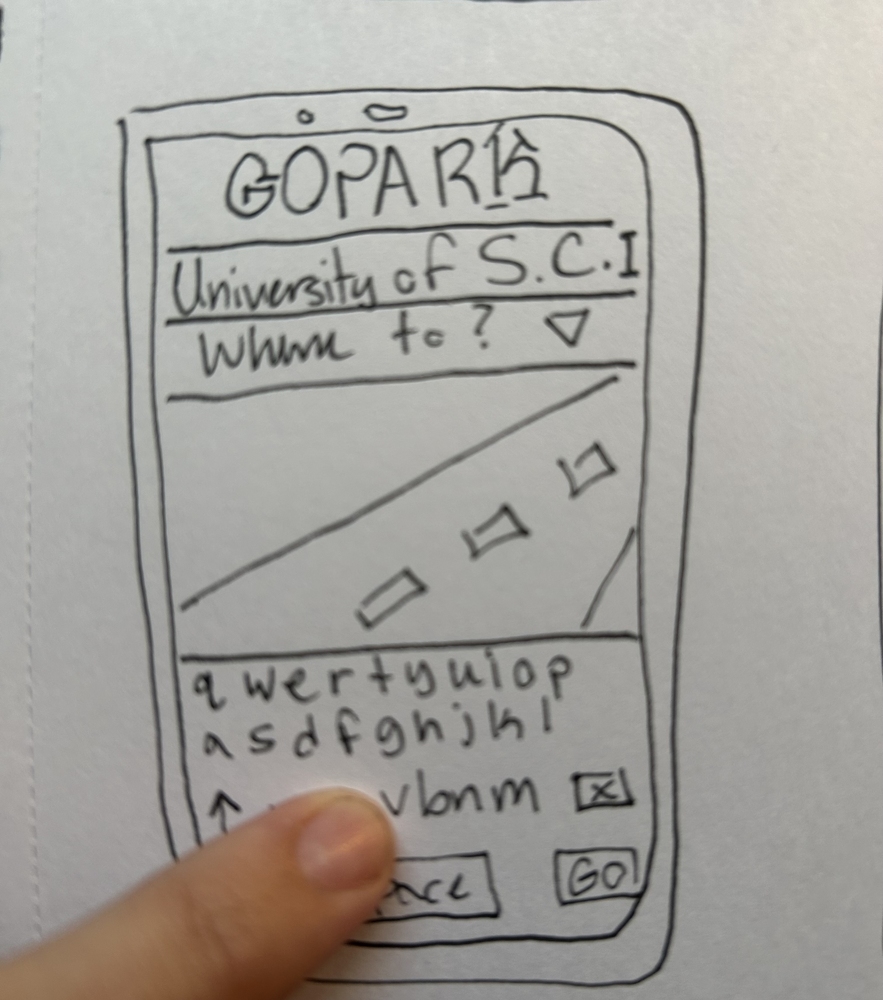
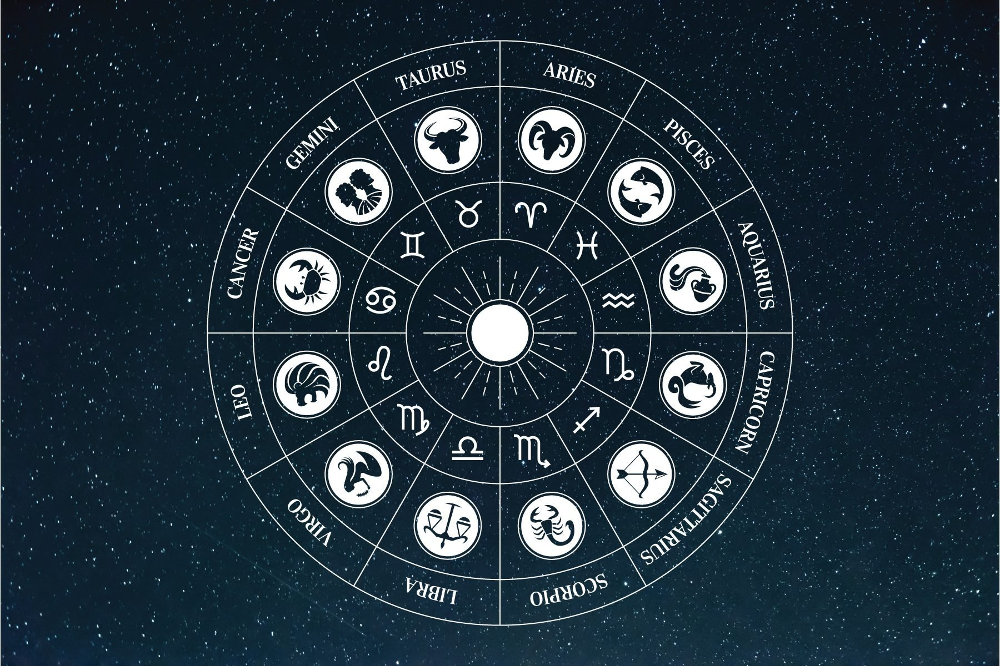

Problem Statement

USC students and professors fight daily with finding parking around campus.
Affinity Diagram

This Affinity Diagram illustrates my brain storm when coing up with this potential app. I tried to hit all major areas of how this app could become and stay sucessful.
Images/Sketches

These images show potential of what this app could be, I wanted the parking feature in full display along with the gps feature. Sleek design and ease of use is something I really want used in this application. (These images were generated by Canva AI generator)
Prototype

My app "GOPARK" is shown above with easy handling, and a practical use of said app at the University of South Carolina. I know from personal use that by 10:30 in the morning that Bull street Garage is usually full and sometimes it would be nice to know how many spots were available in the garage and this app shows that exactly.
First Java Project
During my first semester at the University of South Carolina, I was enrolled in Algorithmic Design 1. I was new to coding and programming and found learning Java difficult. This repo is my very first coding assignment and I hold it very close to my heart. I was so frustrated with such an easy assignment and it took me over two days to fully learn how to not only understand binary, but make a program that solves multiplying and adding binary together. Now when I'm working on multi-class C++ programs with annoying pointers and multiple objectives to achieve, I go back to this program and am proud of how far I've come.
What's your Zodiac Sign?

Another Algorithmic 1 project once I got the hang of Java and wanted to have more fun with it. This is the first project I enjoyed creating and discovered I did in fact choose the right major.